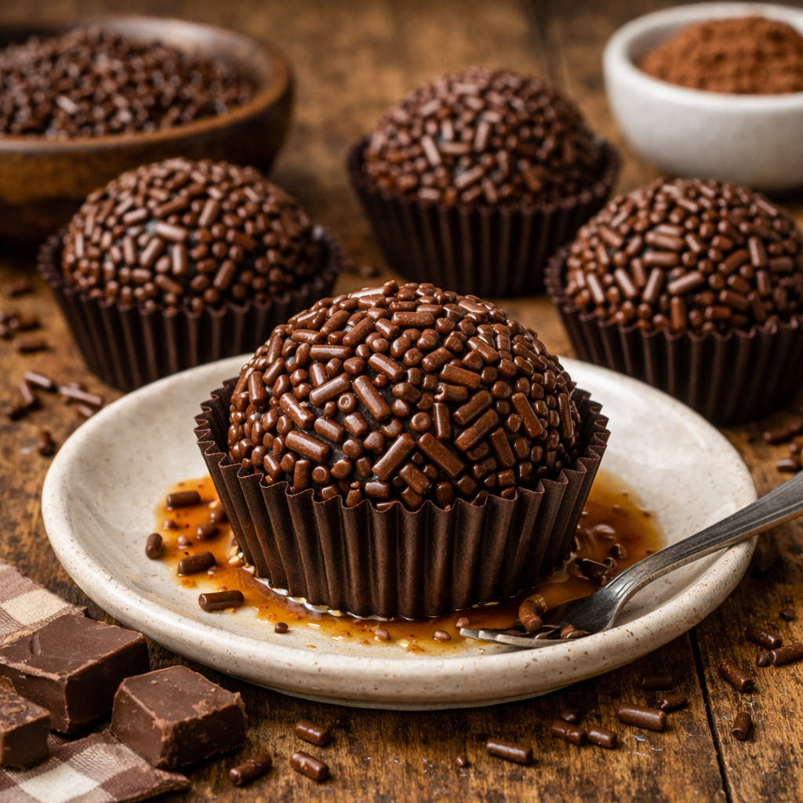

Brigadeiro

Ingredientes
| Ingredientes | Quantidade |
|---|---|
| Creme de leite | 3 colheres de sopa |
| Leite condensado | 1 Lata |
| Chocolate em pó | 1 xícara (chá) |
| Manteiga | 1 colher (sopa) |
Modo de Preparo
- Em uma panela, misture o leite condensado, o creme de leite, o chocolate em pó e a manteiga.
- Leve ao fogo médio, mexendo sempre, até que a mistura comece a desgrudar do fundo da panela (ponto de brigadeiro).
- Despeje a mistura em um prato untado com manteiga e deixe esfriar completamente.
- Depois de frio, unte as mãos com manteiga, faça bolinhas com a massa e passe no granulado de chocolate.
- Coloque os brigadeiros em forminhas de papel e sirva.